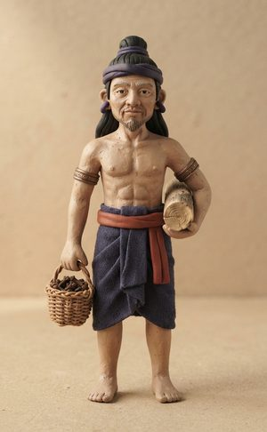
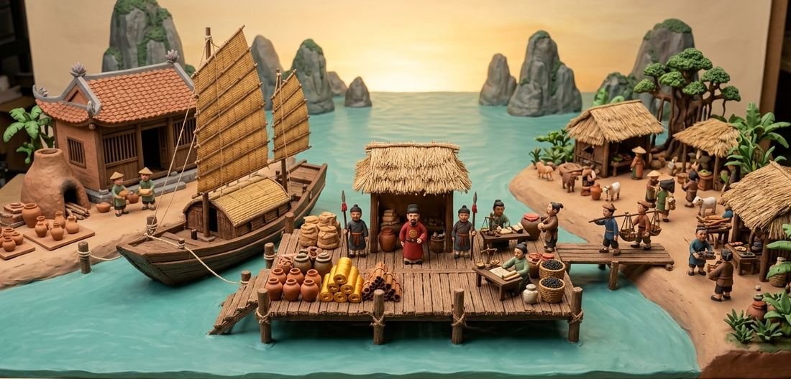

Vân Đồn
The First Trading PortĐệ Nhất Thương CảngIn 1149, under King Lý Anh Tông, merchant ships from the southern seas came to the Hải Đông coast asking to settle and trade, and the court founded the estate of Vân Đồn, commonly regarded as the first international trading port of Đại Việt. You are the one sent to build it.
Năm 1149, đời vua Lý Anh Tông, thuyền buôn các nước phương Nam vào Hải Đông xin cư trú buôn bán, và triều đình cho lập trang Vân Đồn, thường được coi là thương cảng quốc tế đầu tiên của Đại Việt. Bạn là người được giao dựng bến.
Play 2D: Build the portChơi bản 2D: Dựng bến Play 3D: Walk the quayChơi bản 3D: Dạo bếnThe games themselves are in Vietnamese for now.
- GenreThể loại
- City building, port managementXây dựng, quản lý thương cảng
- SettingBối cảnh
- Hải Đông coast, from 1149Vịnh Hải Đông, từ năm 1149
- DevicesThiết bị
- Phone (portrait first), computerĐiện thoại (ưu tiên màn dọc), máy tính
- AgeĐộ tuổi
- 2D: all ages · 3D: 16+2D: mọi lứa tuổi · 3D: từ 16 tuổi
Vân Đồn in the chroniclesVân Đồn trong chính sử
The events the games draw on, as recorded in the Đại Việt sử ký toàn thư (Complete Annals of Đại Việt).
Những mốc trò chơi dựa vào, theo Đại Việt sử ký toàn thư.
- 1149Merchant ships from Java (Trảo Oa), Lộ Lạc and Siam (Xiêm La) arrive at Hải Đông asking to settle and trade; the court founds the estate of Vân Đồn.Thuyền buôn Trảo Oa, Lộ Lạc, Xiêm La vào Hải Đông xin cư trú buôn bán; triều đình cho lập trang Vân Đồn.
- 1184Merchants from Siam and Srivijaya (Tam Phật Tề) come to Vân Đồn asking to trade.Người buôn Xiêm La và Tam Phật Tề vào Vân Đồn xin buôn bán.
- 1288Trần Khánh Dư attacks Zhang Wenhu’s Yuan supply fleet in these waters; short of food, the Yuan army retreats, opening the way to the victory at Bạch Đằng.Trần Khánh Dư đánh đoàn thuyền lương của Trương Văn Hổ ở vùng biển này; quân Nguyên cạn lương phải rút, mở đường cho đại thắng Bạch Đằng.
- 1348Ships from Đồ Bồ come to Vân Đồn and secretly buy pearls.Thuyền Đồ Bồ đến Vân Đồn ngầm mua ngọc trai.
- 1349The Trần court installs governors, officials, sea inspectors and the Bình Hải guard at the garrison of Vân Đồn.Nhà Trần đặt quan trấn, quan lộ, sát hải sứ và quân Bình Hải ở trấn Vân Đồn.
Build the port from above, or walk its quayDựng bến từ trên cao, hoặc tự đi trên bến
-
 2D editionBản 2DAll agesMọi lứa tuổi
2D editionBản 2DAll agesMọi lứa tuổiBuild the port: city buildingDựng bến: xây dựng thương cảng
As the warden sent by the king, tap to place buildings, upgrade them, welcome merchant ships and raise the port’s rank.
Bạn là quan trấn thủ được vua giao dựng bến. Chạm để đặt công trình, nâng cấp, đón thương thuyền và thăng hạng bến.
- Saves every 12 seconds; pick up where you left offTự lưu mỗi 12 giây, vào lại chơi tiếp ván cũ
- A history codex and an achievements board with six titlesCó Sổ sử ký, Bảng thành tích với 6 danh hiệu
- A separate Challenge 1288: Battle of Vân ĐồnCó chế độ Thử thách 1288: Trận Vân Đồn
-
3D edition · previewBản 3D · thử nghiệmAges 16+Từ 16 tuổi
Walk the quay: trade and port taxDạo bến: buôn bán và thuế cảng
Walk among clay-figure characters: buy goods at the workshops, carry them to the piers for the merchant ships, and set the port tax.
Tự đi lại trên bến giữa các tượng đất nặn: ghé lò xưởng mua hàng, mang ra cầu tàu giao cho thương thuyền, và định mức thuế cảng.
- Six chapters, each a 90-second market sessionSáu chương, mỗi chương một phiên chợ 90 giây
- Play as the Port Warden or the Merchant WomanChọn nhân vật Quan trấn thủ hoặc Nữ thương chủ
- Keeps your best score; games in progress are not saved yetChỉ lưu kỷ lục điểm, chưa lưu ván chơi dở
From a small estate to the first port of the realmTừ trang nhỏ đến đệ nhất thương cảng
- BuildKiến thiếtPottery kilns, silk workshops, pearl-diving stations, agarwood posts; piers on the shore bring more ships, warehouses add storage. Every building upgrades to level 3.Dựng lò gốm, xưởng dệt lụa, bến mò ngọc trai, trạm trầm hương; cầu tàu ven bờ đón thêm thuyền; kho tăng sức chứa. Mỗi công trình nâng được tới cấp 3.
- TradeGiao thươngShips from Song China, Srivijaya, Java and Siam dock in turn, each wanting different goods. Stock in the warehouse sells automatically for strings of cash.Thương thuyền Tống, Tam Phật Tề, Trảo Oa, Xiêm La lần lượt cập bến; mỗi nước chuộng mặt hàng khác nhau. Hàng trong kho tự bán ra thu quan tiền.
- RenownDanh vọngEvery departing ship adds renown, and a sea-god temple adds more. With enough, the court promotes the port and unlocks new buildings.Mỗi thuyền rời bến cho danh vọng; đền thần biển cộng thêm. Đủ danh vọng, triều đình thăng hạng bến và mở công trình mới.
- EventsBiến cốStorms on the bay stop all work; sea raiders loot the port unless you build a naval watchtower; passing tribute missions leave gifts.Bão trên vịnh làm mọi việc đình trệ; giặc biển cướp bến nếu chưa dựng Vọng lâu thủy binh; đoàn cống sứ ghé ngang biếu quà.
- Royal tributeCống phẩm triều đìnhFrom the rank of Vân Đồn Estate, royal edicts ask for goods by a deadline. Deliver in time for a large reward and +10 renown; miss it and lose renown.Từ hạng Trang Vân Đồn, chiếu chỉ định kỳ đòi dâng sản vật trong hạn. Dâng kịp được thưởng lớn và +10 danh vọng; trễ hạn bị trừ danh vọng.
- Small estateTrang nhỏ
- Vân Đồn EstateTrang Vân Đồn
- Vân Đồn GarrisonTrấn Vân Đồn
- First Trading Port of Đại ViệtĐệ Nhất Thương Cảng Đại Việt
Challenge 1288: the Battle of Vân ĐồnThử thách 1288: Trận Vân Đồn
Winter 1287–1288: Prince Nhân Huệ, Trần Khánh Dư, regroups his men and lies in wait at Vân Đồn for Zhang Wenhu’s supply fleet. Three waves of grain ships cross the bay. Tap a ship to loose fire arrows; let five slip past and you lose. At the end of wave three, sink Zhang Wenhu’s flagship for a great victory. This mode does not affect your port-building game.
Đông 1287–1288, Nhân Huệ Vương Trần Khánh Dư thu tàn quân, phục ở Vân Đồn chờ đoàn thuyền lương của Trương Văn Hổ. Ba đợt thuyền lương giặc vượt vịnh: chạm vào thuyền để bắn tên lửa, để lọt 5 thuyền là thua. Cuối đợt 3, đánh chìm soái thuyền Trương Văn Hổ để đại thắng. Chế độ này không ảnh hưởng ván xây dựng đang chơi.
Six chapters, two hundred yearsSáu chương, hai trăm năm
Each game starts with 200 strings of cash and 15 renown, and you can carry only 10 bundles. Every chapter the court sets one task. If renown falls below zero, you are dismissed.
Mỗi ván bắt đầu với 200 quan tiền và 15 danh vọng; gánh chỉ mang được 10 kiện. Mỗi chương triều đình giao một việc. Danh vọng xuống dưới 0 là bị bãi chức.
| ChapterChương | YearNăm | Task from the courtViệc triều đình giao | SourceNguồn |
|---|---|---|---|
| 1. Founding the estate1. Lập trang | 1149 | Fill two orders completely (only Javanese and Siamese ships)Giao trọn 2 đơn hàng (chỉ có thuyền Trảo Oa, Xiêm La) | RecordedTheo sử |
| 2. Merchants from the north2. Khách buôn phương Bắc | later yearsnhững năm sau | Sell 800 strings of cash worth of goodsBán được 800 quan tiền hàng | InventedTrò chơi dựng |
| 3. Srivijaya arrives3. Tam Phật Tề đến | 1184 | Fill the Srivijayan ship’s order completelyGiao trọn đơn của thuyền Tam Phật Tề | RecordedTheo sử |
| 4. Sea raiders4. Giặc biển | monsoon seasonmùa gió bấc | Drive off raiders mid-session (needs a naval watchtower)Đẩy lui giặc biển giữa phiên (cần Vọng lâu thủy binh) | InventedTrò chơi dựng |
| 5. The tribute edict5. Chiếu đòi cống | a good harvest yearnăm được mùa | Offer 3 pearls and 4 silksDâng 3 ngọc trai và 4 lụa | InventedTrò chơi dựng |
| 6. The Đồ Bồ ship6. Thuyền Đồ Bồ | 1348 | Don’t sell pearls in secret to the Đồ BồKhông bán lén ngọc trai cho người Đồ Bồ | RecordedTheo sử |
- W A S D
- Walk (or arrow keys); on a phone, drag the circle at bottom-leftĐi lại (hoặc phím mũi tên); điện thoại: kéo vòng tròn góc trái
- E
- Talk to people, read steles (or Enter, Space); on a phone, the red button at bottom-rightGặp người, đọc bia (hoặc Enter, Space); điện thoại: nút đỏ góc phải
- Esc
- Close a conversation; on a phone, the “Go on” buttonĐóng bảng hội thoại; điện thoại: nút «Đi tiếp»
Who comes to Vân ĐồnAi cập bến Vân Đồn
The four merchant ships follow the lands the chronicles record at Vân Đồn. Their clay figures in the 3D edition are dressed after each region, in a stylised way.
Bốn thuyền buôn trong game lấy theo các nước sử chép có đến Vân Đồn. Tượng đất nặn trong bản 3D được dựng theo trang phục từng vùng, có cách điệu.
-
Merchants from the northKhách buôn phương Bắc
Song merchantThương nhân Tống
Round-collared robe, a green-glazed bowl, a roll of silk.
Áo cổ tròn, bát men xanh, cuộn lụa.
-
Recorded in 1184Sử chép năm 1184
Srivijayan merchantThương nhân Tam Phật Tề
Shoulder-length hair, red cloth, ivory, a bamboo tube of camphor, a tortoiseshell plate.
Tóc ngang vai, vải đỏ, ngà voi, ống tre long não, tấm đồi mồi.
-

Recorded in 1149Sử chép năm 1149Javanese merchantThương nhân Trảo Oa
Hair bound with an indigo band, a knee-length indigo cloth, a basket of cloves, a log of sandalwood.
Búi tóc quấn dải chàm, vải chàm ngang gối, giỏ đinh hương, khúc đàn hương.
-
Recorded in 1149Sử chép năm 1149
Siamese merchantThương nhân Xiêm La
Modelled on the Mon–Khmer people of the Chao Phraya valley in the 12th century.
Dựng theo cư dân Môn–Khmer vùng Chao Phraya thế kỷ 12.
Where the games simplify historyChỗ trò chơi giản lược
- The 3D edition packs two hundred years (1149–1348) into six chapters. “Merchants from the north”, “Sea raiders” and “The tribute edict” are the game’s own scenarios.
- In 1149 Vân Đồn was only an estate, so the “port warden”, the customs house, the clerk, the naval watchtower and the sea-god temple are invented.
- Tax rates, prices, orders and building costs are game numbers.
- 1348: the chronicle records the Đồ Bồ ship secretly buying pearls; the stranger who asks you, and the choice to sell or report him, are added by the game.
- The name Xiêm La follows the Annals, although the Thai kingdom was only founded in the 13th century.
- Chu Đậu blue-and-white ware appears in the late 14th century, so the kilns make generic “Đại Việt ceramics”. “Tàu Ô” is an 18th–19th-century name for pirates, so Vân Đồn’s raiders are simply “sea raiders”.
- Agarwood was traded through the port, not grown on the islands; pearls were dived from the sea, since pearl farming did not yet exist.
- Costumes are stylised, not reconstructed from artefacts. Images with anachronisms (blue-and-white jars, Vietnamese Latin script, dragon-embroidered robes for officials…) were rejected.
- Bản 3D gói hai trăm năm (1149–1348) vào sáu chương. Ba chương «Khách buôn phương Bắc», «Giặc biển», «Chiếu đòi cống» là cách dựng của trò chơi.
- Năm 1149 Vân Đồn mới là trang, nên «quan trấn thủ», Nhà thuế quan, thư lại, vọng lâu thủy binh và đền thần biển là hư cấu.
- Mức thuế, giá hàng, đơn hàng và giá công trình là số liệu trò chơi.
- Chương 1348: sử chép thuyền Đồ Bồ ngầm mua ngọc trai; việc người lạ hỏi mua và lựa chọn bán lén hay báo quan là tình huống trò chơi dựng thêm.
- Tên Xiêm La chép theo Toàn thư, dù vương quốc của người Thái đến thế kỷ 13 mới lập.
- Gốm hoa lam Chu Đậu ra đời cuối thế kỷ 14, nên lò gốm trong game gọi chung là «gốm Đại Việt». «Giặc Tàu Ô» là tên gọi thế kỷ 18–19, nên bến Vân Đồn gọi là «giặc biển».
- Trầm hương là hàng trung chuyển, không phải sản vật của đảo; ngọc trai là ngọc mò ngoài biển, thời ấy chưa có nghề nuôi cấy.
- Trang phục nhân vật được cách điệu, không phục dựng theo hiện vật. Ảnh có chi tiết lệch niên đại (gốm hoa lam, chữ quốc ngữ, áo thêu rồng cho quan…) đã bị loại.
In the 2D edition, the history codex has a section on these simplifications.Trong bản 2D, Sổ sử ký có mục «Chỗ trò chơi giản lược» nói rõ các điểm này.
From the port of 1149 to today’s marketsTừ thương cảng 1149 đến thương trường hôm nay
At Vân Đồn you set the port tax, choose the goods and welcome merchant ships from four directions. To try the same decisions in a present-day setting, visit BizOn (bizonland.com) ↗: a set of simulation games for learning international business, founded by Đỗ Thùy Hương with Assoc. Prof. Phan Anh Tú. There, players set prices, work out the break-even point and choose how to take a product into a foreign market.
Ở Vân Đồn, bạn định mức thuế, chọn mặt hàng và đón thuyền buôn bốn phương. Muốn thử những quyết định ấy trong bối cảnh ngày nay, mời bạn sang BizOn (bizonland.com) ↗: bộ trò chơi mô phỏng học kinh doanh quốc tế do Đỗ Thùy Hương sáng lập cùng PGS.TS. Phan Anh Tú. Ở đó người chơi định giá, tính điểm hòa vốn và chọn cách đưa sản phẩm ra thị trường nước ngoài.
BizOn is a separate site, not part of this portal, with its own privacy policy. The link opens in a new tab.BizOn là trang riêng, không thuộc cổng trò chơi này và có chính sách quyền riêng tư riêng. Liên kết mở ở thẻ mới.

«Vân Đồn – Tiếng vọng non sông»
“Vân Đồn – Echoes of the Homeland”, 5 min 17 s, sung in Vietnamese. It plays from the title screen and at the end of a game if you were not dismissed. While you play, a pentatonic score of zither and monochord is generated live in the game.
Bài hát dài 5 phút 17 giây, có ở màn mở đầu và tự phát ở màn kết thúc khi bạn không bị bãi chức. Lúc chơi, nhạc nền ngũ cung đàn tranh, đàn bầu được tạo trực tiếp trong game.
Watch the lyric video on YouTubeXem lyric video trên YouTube Also: «Người trao ta chân trời», the song shared by Vân Đồn and Bắc Hải ĐảoNghe thêm «Người trao ta chân trời», bài hát chung của Vân Đồn và Bắc Hải Đảo